Build the Integration Process
Build the Boomi integration process that generates files and routes them through the MFT flow you configured in Exercise 1.
What You'll Build
- A Branch shape that fans out to three parallel partner paths
- A Message shape on each path to generate file data
- A Set Properties shape on each path to tag the file with the partner name (used for routing)
- An MFT Connector (Drop Off operation) to push each file into the AFT flow
- Regex filename filters on each AFT target endpoint to route files to the correct partner
Create the Process
Log into the Boomi Integration platform and create a new process in your personal workspace folder.
-
1
Once logged in, find the folder on the left with your name. This was created for you as part of the user registration process and will be your working directory.
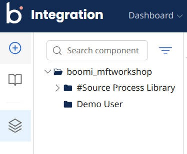
-
2
Select your folder and click New Component.
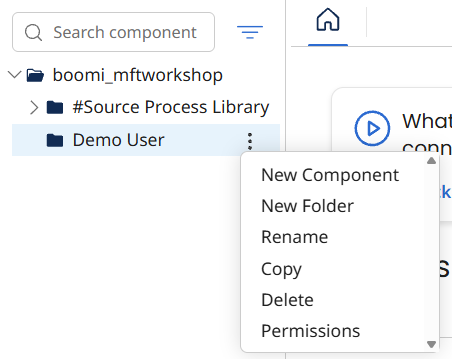
-
3
From the Create Component view, create a Process. This will open a Start step on the canvas.
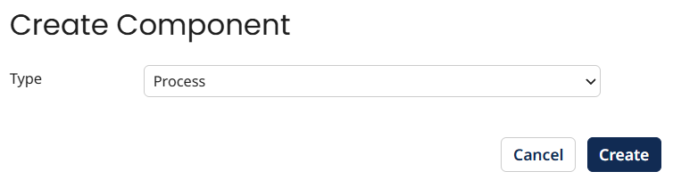

-
4
Click on the Start step to open its properties. Change the type from Connector to No Data and set the Display Name to
CRM. Click OK.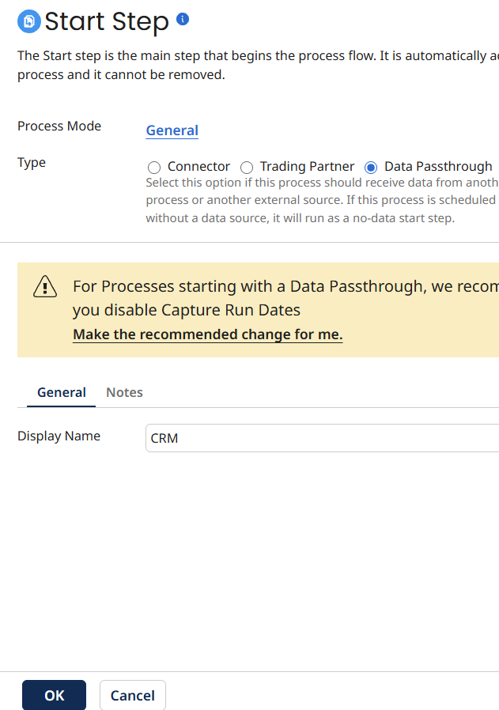

Add Branch & Message Steps
Add a Branch shape with 3 paths, then add a Message shape to each branch to generate file content for each partner.
Add the Branch Step
-
1
From the Steps panel, switch the filter from Execute to Logic and select a Branch step.
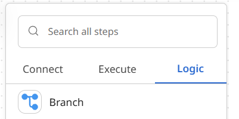
-
2
Add it to the canvas. Change the number of branches to 3 and click OK.
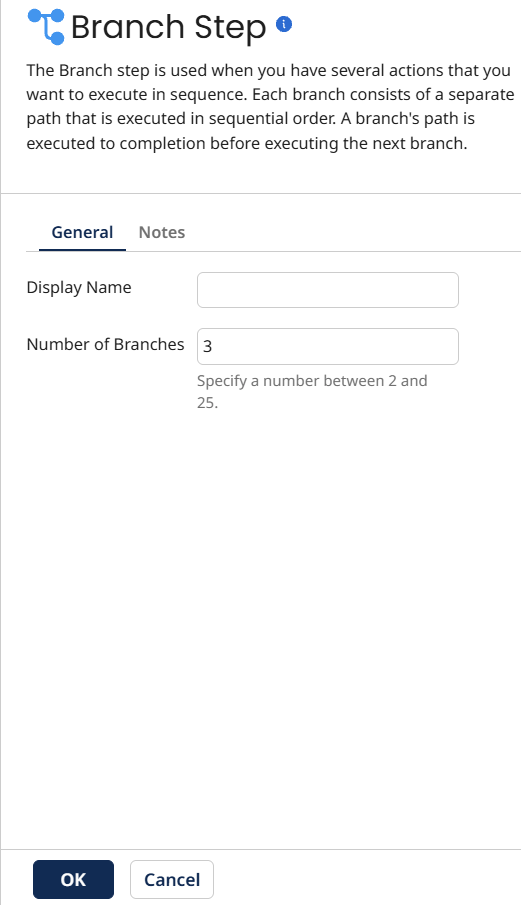
-
3
Connect the Start shape to the Branch.

Add Message Steps
-
4
From the Steps panel, switch back to Execute and choose a Message step. Add it to the canvas — this opens the Message Step Properties dialog.
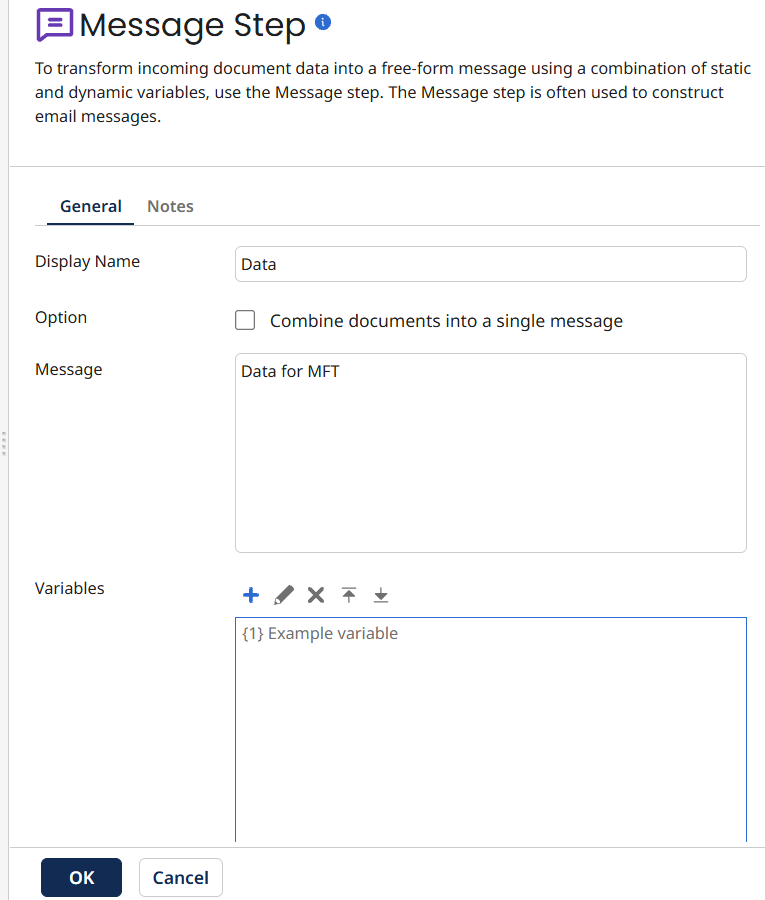
-
5
Set the Display Name to
Data. In the message body type:data for mft. Click OK. -
6
Hover over the Message shape on the canvas and click Copy, then paste it twice so you have three Message shapes total.
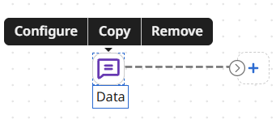

-
7
Connect each Message shape to one of the three branches from the Branch step.
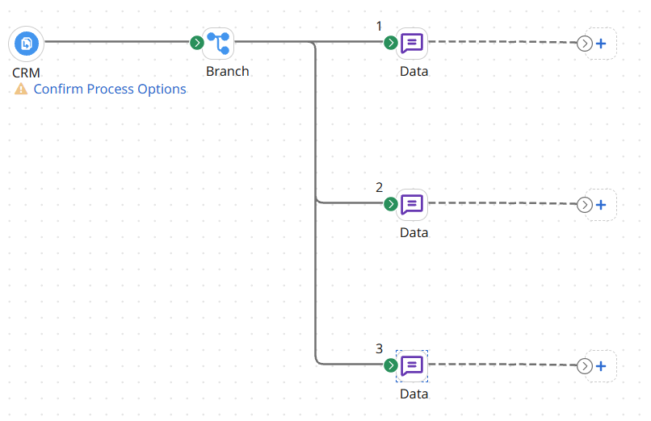
Configure File Name Filtering
Add a Set Properties step to each branch to tag files with the partner name. These file names drive the MFT routing filters.
[[VW]]_ExampleFile.txt.-
1
Add a Set Properties step to the canvas.
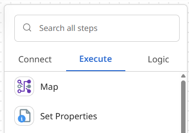
-
2
Click the + button inside the Set Properties step to open its configuration.

-
3
Set the Display Name to
File Name Filtering. Configure the Properties to Set and Property Values as shown — this sets the filename so it begins with the partner tag.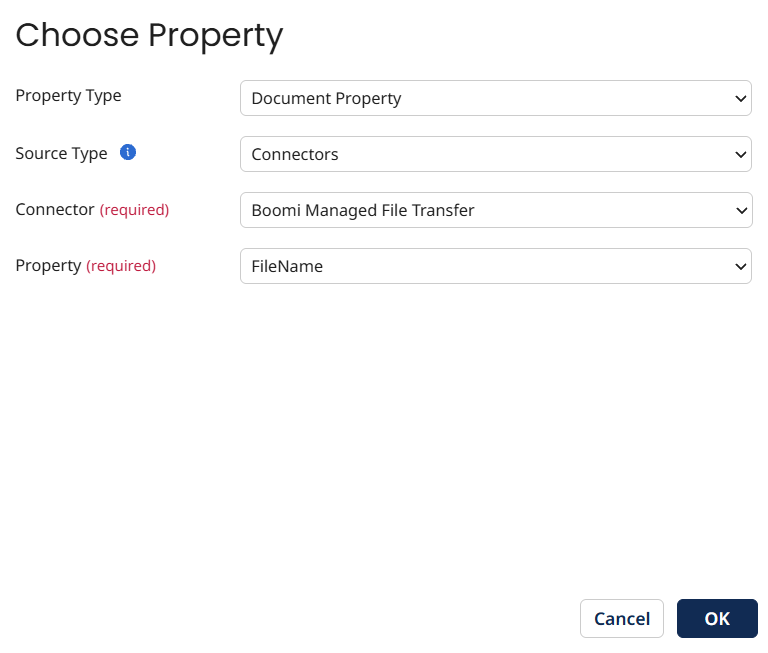
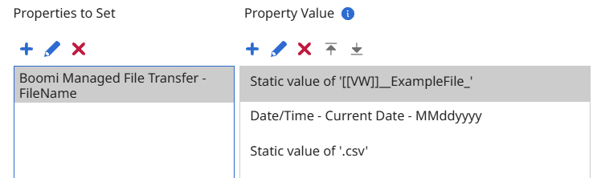
-
4
Copy the File Name Filtering step and paste it two more times — one for BMW, one for Mazda.
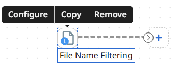
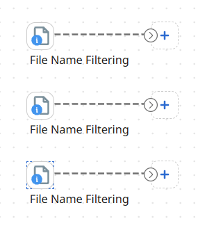
-
5
Edit the second and third copies to update the partner name in the filename property (one for BMW, one for Mazda).
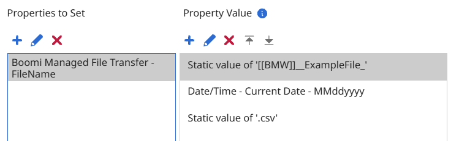

-
6
Connect each File Name Filtering step to its corresponding Data (Message) step.
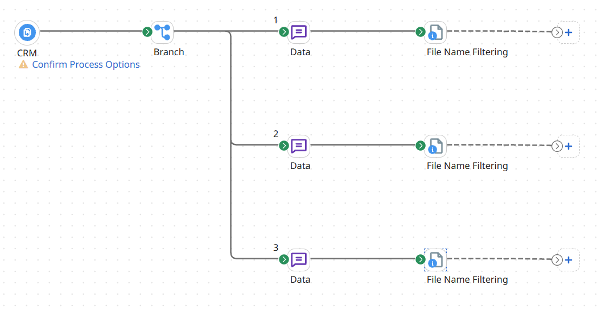
Add the MFT Connector
Add a Managed File Transfer connector, configure the connection using credentials from Exercise 1, and define the Drop Off operation.
-
1
Add a Managed File Transfer connector to the canvas. Set the Display Name to
Drop Off.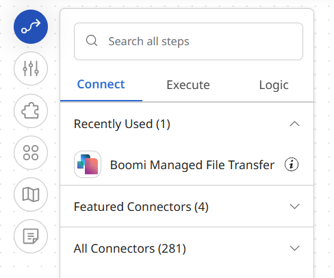

-
2
Click the green + to create a new Connection. Enter the values you captured from the AFT portal Connection tab in Exercise 1. Click Save.
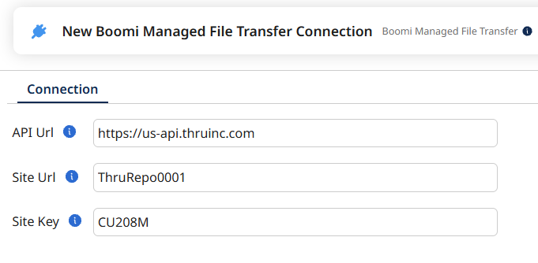
-
3
Change the Action to
CREATEand click the green + to define the Operation. Click Import Operation.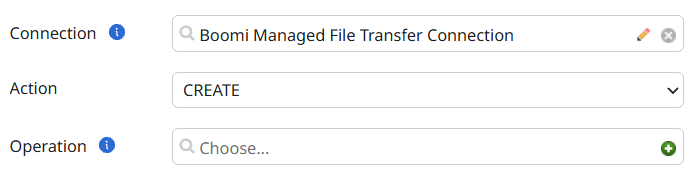
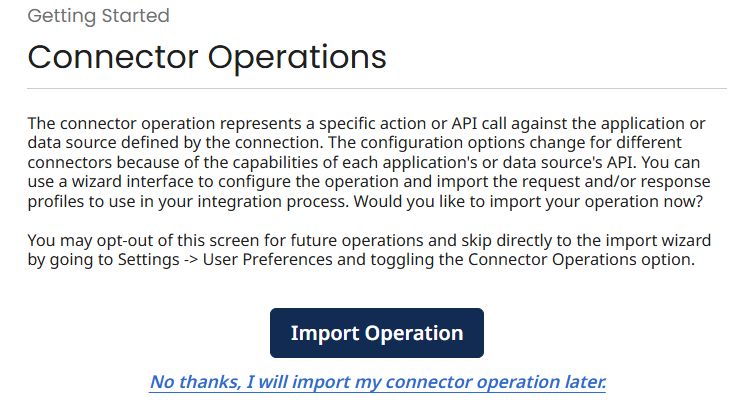
-
4
Select the Workshop Runtime from the dropdown and click Next.

-
5
Select Drop_OFF from the dropdown and click Next. Confirm the final screen looks correct and click Finish.
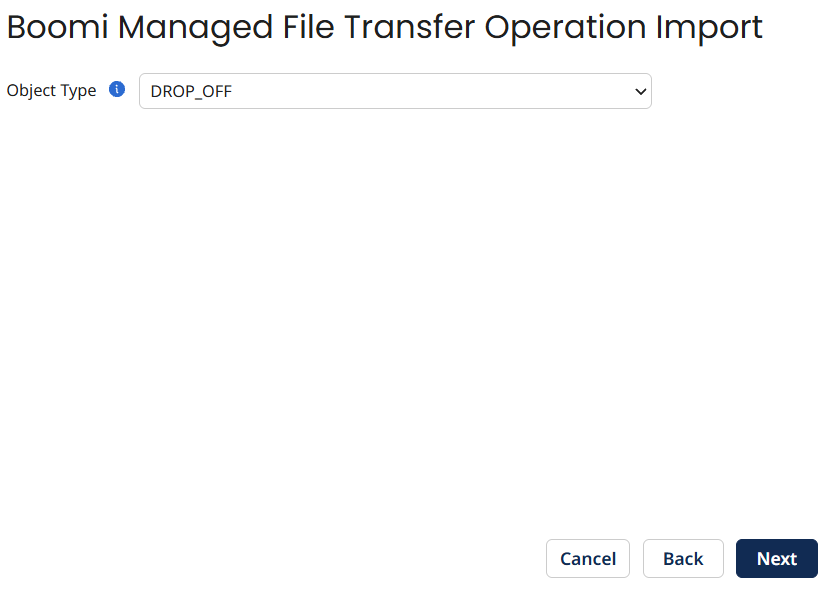
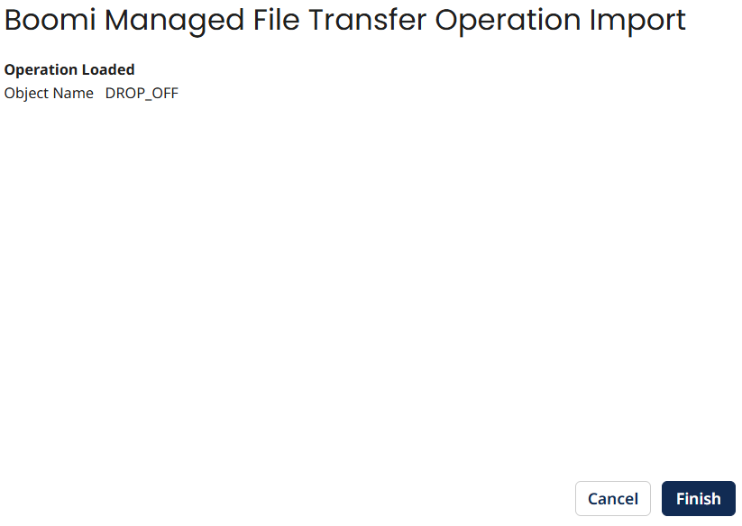
-
6
Define the Flow Secret and click Save and Close.
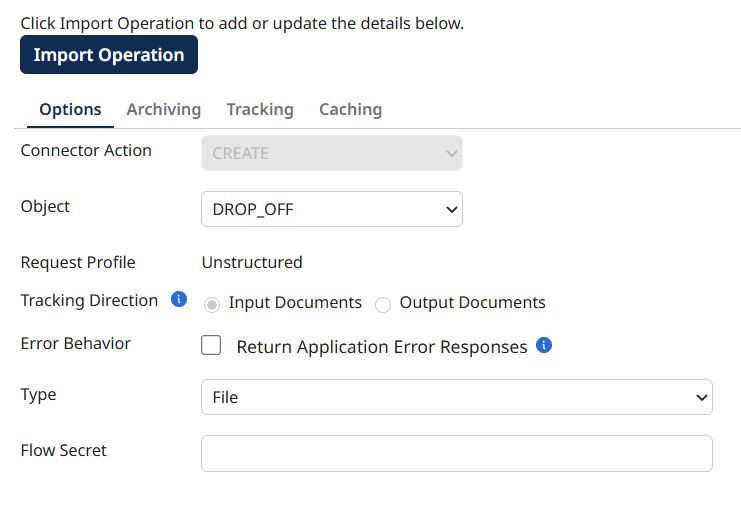
-
7
Connect the three File Name Filtering steps to the MFT Drop Off connector, then add a Stop step at the end of the process.
Add Routing Filters & Test
Run an initial test, then return to the MFT flow to add regex filename filters so each partner only receives their files.
First Test Run
-
1
Test the process now. Note: routing filters haven't been added yet, so all files will arrive at all targets — this is expected. Run the test to confirm the connector is working.
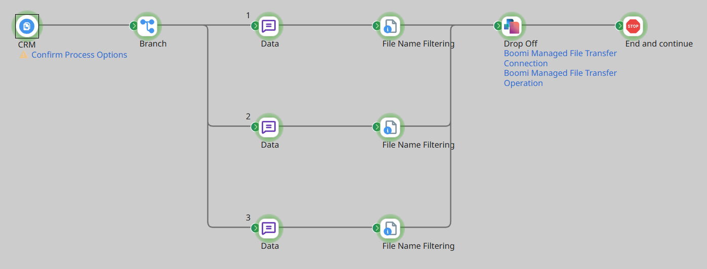

Add Regex Routing Filters in AFT
-
2
In Flow Studio, edit the VW target endpoint — use the Actions menu and choose Edit Flow Endpoint Settings. Update the Flow Endpoint Name to
VW Target.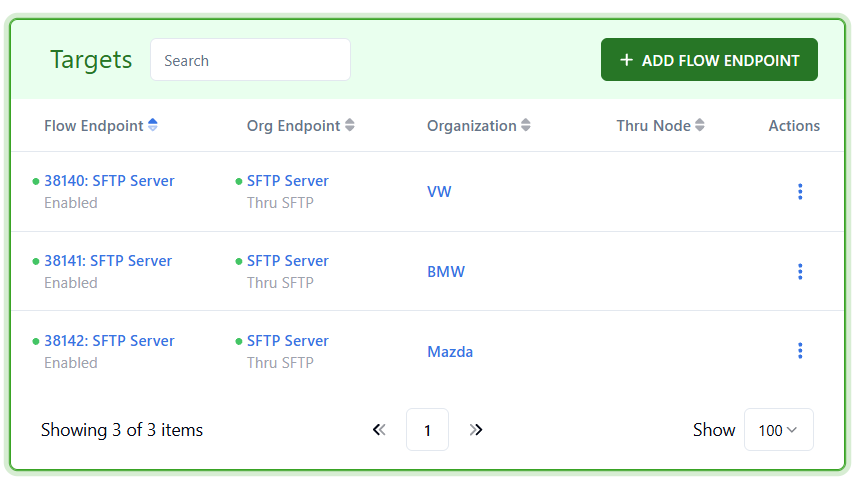

-
3
Add an Include Filter with the regex below, then click Save Changes.
\[\[VW\]\]_.+ -
4
Repeat for BMW and Mazda using the filters below:
Target Flow Endpoint Name Include Filter BMW BMW Target \[\[BMW\]\]_.+ Mazda Mazda Target \[\[Mazda\]\]_.+ VW VW Target \[\[VW\]\]_.+ 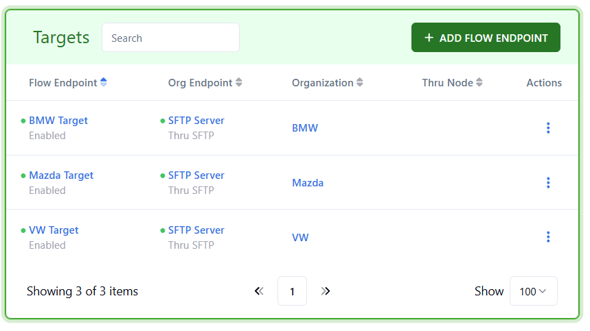
-
5
Click Push to update the flow with the new filter changes.

Verify File Distribution
Execute the process one final time and verify in the MFT Activity view that each partner received only their correct files.
-
1
Return to the Boomi Integration canvas and execute the process again. You should see three files in the process execution results — one for each partner.
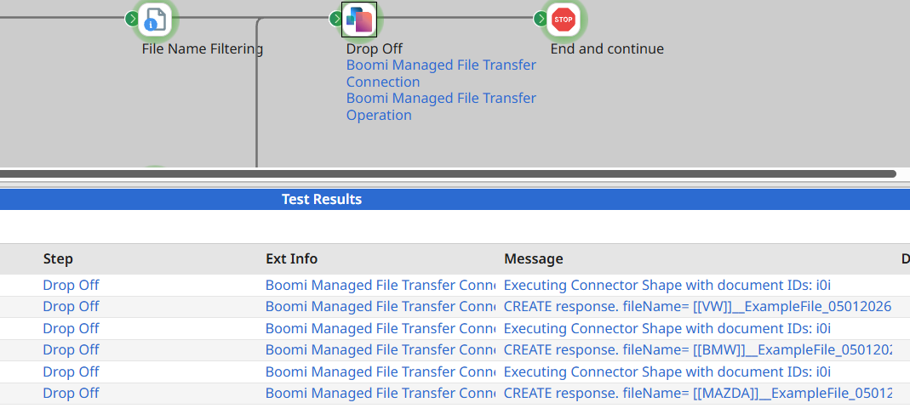
-
2
In the AFT portal, navigate to the Activity view. Confirm the three files have been correctly filtered and routed to their respective partner targets.
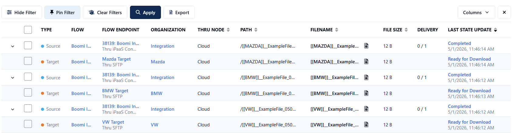
Lab complete